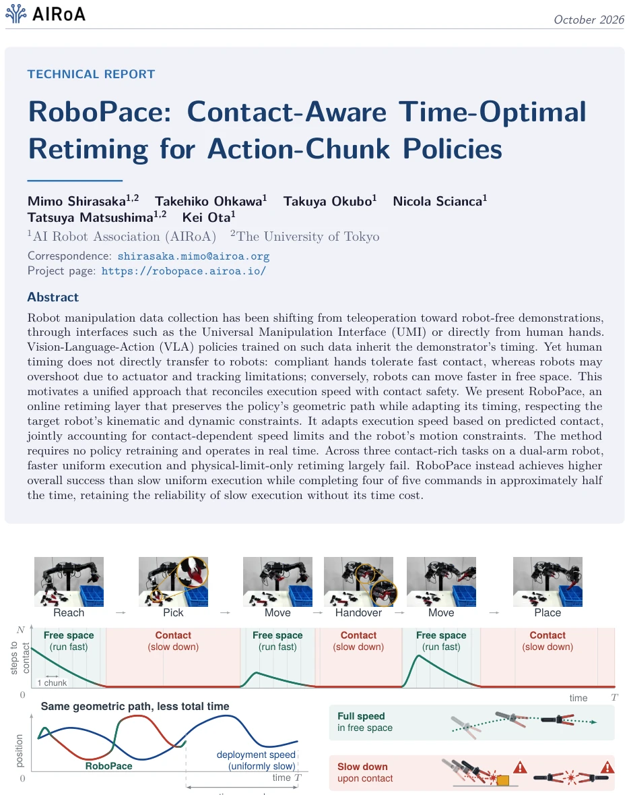
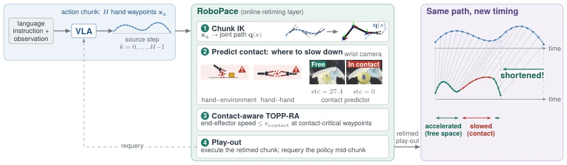
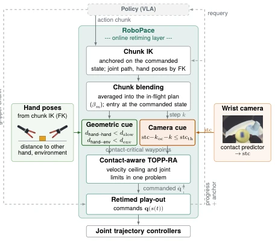
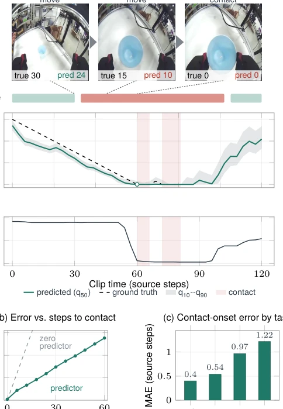
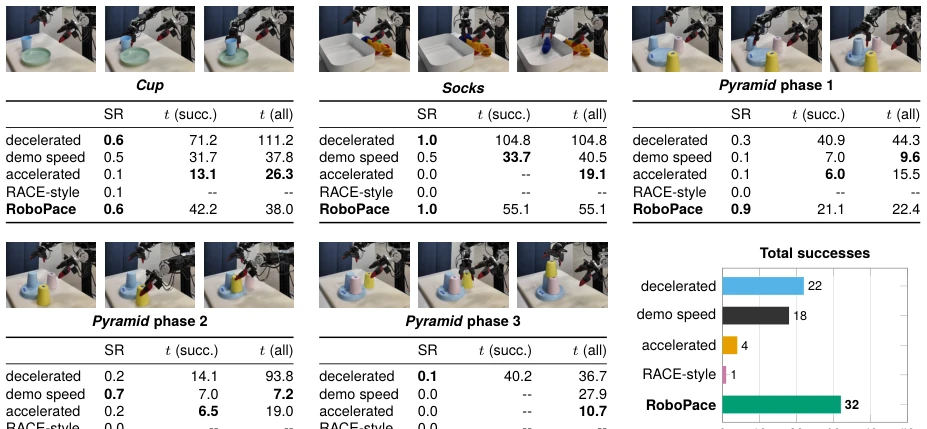
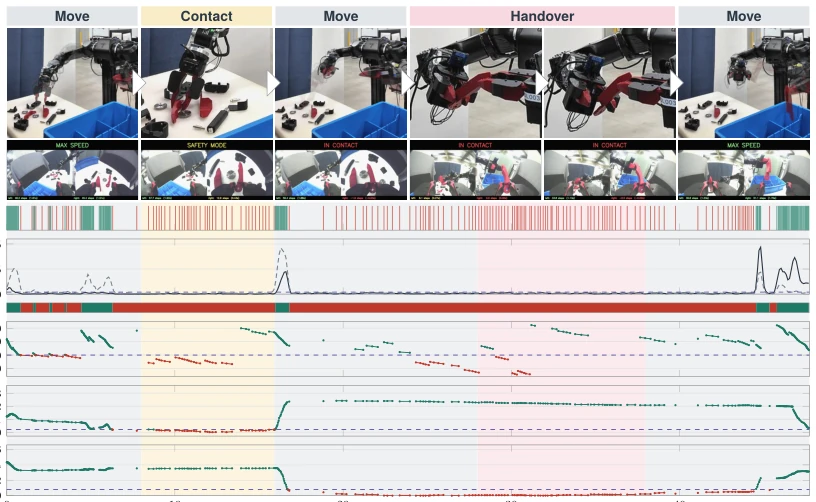

RoboPace serves as a lesson in "time management" for VLA policies. Directly applying human demonstration timing to robots results in either wall collisions upon contact or snail-like slowness in free space. This work does not retrain the policy but adds a "contact-aware" speed limiter at the inference layer. The advantages are flexible speed control, acceleration in free space, and deceleration at contact points, achieving a good balance between success rate and speed. The disadvantages are reliance on the accuracy of contact prediction, and it has only been implemented on the dual-arm OpenArm, raising doubts about generalization. Calling it a "general" solution is somewhat premature, as without retraining the policy, it may still rely on luck when encountering unseen contact scenarios. However, for existing VLA deployments, this is indeed a low-cost patch to improve robustness, much smarter than blindly accelerating or decelerating.
研究动机Motivation
具身智能数据收集正转向无机器人演示（如 UMI），但 VLA 策略继承的人类时序无法直接迁移。人类手部柔顺，机器人执行易过冲；自由空间机器人本可更快。现有方法要么训练时改时序（如 DemoSpeedup, ESPADA），要么推理时仅考虑物理极限（如 RACE Kim et al. [2026b]），忽略了接触风险。SAIL Arachchige et al. [2025] 虽切换速率，但未将其纳入路径参数化约束。单一全局速度因子无法解决“接触安全”与“自由空间效率”的权衡。RoboPace 旨在填补这一空白，实现基于预测接触的路径相关速度约束，无需重训策略，解决 embodiment gap 中的时序不匹配问题。
Embodied AI data collection is shifting towards robot-less demonstrations (e.g., UMI), but the human timing inherited by VLA policies cannot be directly transferred. Human hands are compliant, making robot execution prone to overshoot; robots could be faster in free space. Existing methods either modify timing during training (e.g., DemoSpeedup, ESPADA) or consider only physical limits at inference (e.g., RACE Kim et al. [2026b]), ignoring contact risks. SAIL Arachchige et al. [2025] switches rates but does not incorporate them into path parameterization constraints. A single global speed factor cannot solve the trade-off between "contact safety" and "free space efficiency". RoboPace aims to fill this gap, implementing path-related speed constraints based on predicted contact without retraining the policy, solving the timing mismatch problem in the embodiment gap.

Figure 1 | Contact-Aware Retiming of Action Chunks: RoboPace preserves the geometric path a policy predicts and adapts only its timing while respecting the robot’s kinematic and dynamic constraints: predicted contact imposes a speed limit on the hands at contact-critical waypoints (red), while free-space motion (green) runs as fast as those constraints allow. On a dual-arm robot, this achieves higher overall success than uniformly slow execution while completing four of five commands in about half its time.
RoboPace is an online retiming layer located between policy prediction and low-level control. The pipeline is as follows: 1) The policy outputs the end pose of the Action Chunk; 2) Converted to a joint path via inverse kinematics; 3) The contact prediction module combines geometric distance (hand-hand/environment) and wrist camera prediction (Steps to Contact, stc); 4) Converting the contact prediction into a path-dependent velocity ceiling; 5) Using TOPP-RA to solve time-optimal path parameterization, satisfying both robot kinematics/dynamics constraints and contact speed limits; 6) Playback and periodically re-query the policy. The innovation lies in integrating the contact speed limit as a position-dependent joint velocity ceiling into TOPP-RA, rather than simply switching the global rate. Additionally, a smooth transition blending strategy is adopted to handle Chunk switching, avoiding command jumps. The velocity ceiling transitions smoothly via gating weight g(k), ensuring continuous Chunk connection without pauses.

Figure 2 | RoboPace System Overview: TOPP-RA retimes each VLA action chunk as a joint path, limiting speed at waypoints where contact is predicted. This accelerates free-space motion while slowing at contact.

Figure 3 | RoboPace Pipeline: Geometric and camera cues identify contact-critical waypoints for TOPP-RA retiming. The play-out feeds its commanded velocity into the next solve, allowing consecutive action chunks to join without stopping.
Tested 5 commands including Cup, Socks, Pyramid, etc., on the dual-arm OpenArm. Baselines include Demo Speed (uniform acceleration/deceleration execution) and RACE-style (physical limits only). Metrics are Success Rate (SR) and Task Time. RoboPace total success rate 64% (slow uniform 44%), 4/5 commands halved in time. The contact predictor has an MAE below 1.3 steps at contact onset. Ablation experiments show success rate is sensitive to contact speed limits (0.02 m/s is best), switching strategy has less impact. Qualitative analysis on hand-to-hand handoff tasks shows geometric and camera cues effectively trigger deceleration. However, some tasks (e.g., Socks) still take long, possibly due to grasp timing mismatch. Overall, it proves that contact-aware retiming significantly improves efficiency while maintaining reliability.

Figure 4 | Contact Predictor Evaluation: (a) predicted and ground-truth stc on one Cup test clip, (b) mean absolute error (MAE) versus ground-truth stc, and (c) per-task MAE at contact onset (stcgt = 0). At contact onset, MAE is below 1.3 source steps for all tasks.

Figure 5 | Comparison with Baselines: Accelerated execution and physical-limit-only retiming rarely succeed, whereas decelerated execution is reliable but slow. RoboPace achieves 32 successes in 50 trials and completes four of five commands in about half the decelerated execution time.

Figure 6 | Execution Trace of a Bimanual Handover: One run of Part, showing that RoboPace slows as the right hand approaches the part and during hand–hand contact, while accelerating elsewhere. Red and green indicate gated and ungated motion, respectively.